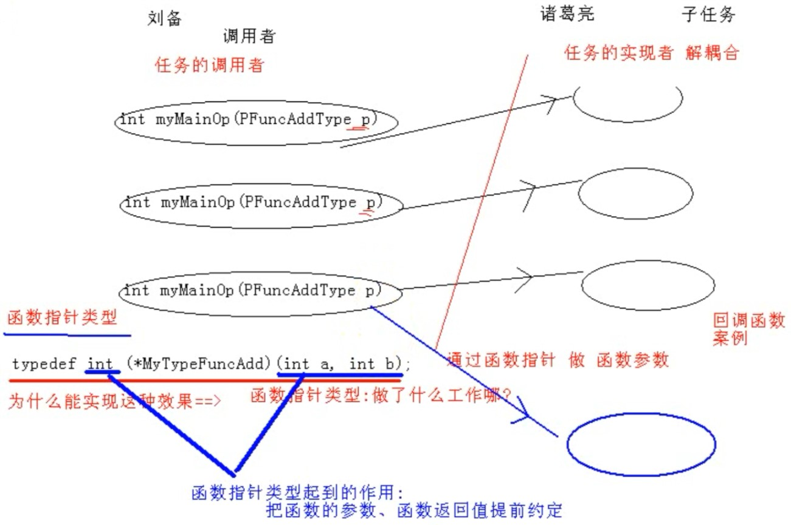

前言
函数指针及回调函数这块一直想深入研究研究，这次看完C++的继承及多态看到书上写到c语言的多态，很是惊奇，c语言中还有多态？遂研究了一下。
函数类型基础语法
函数基础概念
数组类型基本语法梳理：
- 数组类型的定义
（1）int a[10];//a代表的是数组首地址，更准确说是a代表数组首元素地址，&a代表的是整个数组的地址，a+1步长4和&a+1步长4*10=40
(2)定义一个数组类型的方法
typedef int (myTypeArray)[10];//自己定义一个数组类型，同（1）中定义相同
myTypedefArray myArray;//用自己定义的数组类型声明个数组
myArray[0]=10;//对数组进行操作，操作方法与之前一样。
指针数组类型的定义
typedef int (PTypeArray)[10];//同 int p效果一样
PTypeArray myPArray;//步长sizeof(int)元素个数
myPArray=&\a;//步长是取整个数组长度，注意
//int b=10;
//int p=NULL;
//p=&\b;
(*myPArray)[0]=20;//这里注意定义一个指向数组类型的指针
int (PTypeArray)[10];//变量，告诉编译器分配内存
myPArray=&\a;//步长是取整个数组长度，注意
(myPArray)[0]=20;//这里注意
有些迷😵啊
函数三要素：名称、参数、返回值
函数名是函数体的入口地址
函数指针基本语法梳理
（1）定义一个函数类型
C语言中通过typedef为函数类型重命名（即通过以下方法定义函数类型）（类似于数组类型的定义）typedef type name(parameter list);
typedef int f(int , int);
typedef void p(int);
（2）定义一个函数指针类型
定义一个类型，这个类型是指针类型
函数指针用于指向一个函数，有如下几种方法定义函数指针：
1、可通过函数类型定义函数指针：1
2
3
4
5
6
7
8
9
10
11
12
13
14
15
16
17
18
19
20
21
22
23
24
25
26
27
28
29
30
31
32
33
34
35
36
37
38
39
40
41
42
43
44
45
46
472、可直接定义函数指针：```type(*pointer)(parameter list);```其中，pointer为函数指针变量名，type为指向函数的返回值类型，parameter list为指向函数的参数类型列表
（3）定义一个函数指针（指向一个函数的入口地址）
**直接定义函数指针**
```c++
int add(int a,int b)
{
printf("func add ...\n");
return a+b;
}
void main()
{
add(1,2);//函数的直接调用，//函数名就是函数的入口地址
myPointerFunc(3,4);//间接调用函数
//通过变量操作类型
{
//定义一个函数类型
typedef int (MyFuncType)(int a,int b);//定义了一个类型
MyFuncType *myPointerFunc=NULL;//定义变量，定义了一个指针，指向某一种（两个整型参数，整型返回值）类型的函数
myPointerFunc=&add;//细节
//myPointerFunc=add; //细节 取不取地址都能编译通过，c是逐渐完善起来的，兼容历史版本
}
{
//定义一个函数指针类型
typedef int (*MyPointerFuncType)(int a,int b); //相当于int *a=NULL;
MyPointerFuncType myPointerFunc;//定义一个指针
myPointerFunc=add;
myPointerFunc(5,6);
}
{
//直接定义函数指针
int (*MyPointerFunc)(int a,int b);//定义了一个变量
MypointerFunc=add;
MypointerFunc(7,8);
}
}
函数指针做函数参数思想剖析
1 | //相当于虚函数表 |

结论：回调函数的本质：提前做了一个协议的约定（把函数的参数、函数返回值提前约定）
C++编译器通过多态的机制(提前布局vptr指针和虚函数表,找虚函数入口地址来实现)
函数指针在项目中的应用
函数指针正向调用
(1)函数指针做函数参数，调用方式
被调用函数和主调函数在同一文件中（用来教学，没有任何意义）
(2)函数指针做函数参数
被调用函数和主调函数不在同一个文件中、模块中。
难点：理解被调用函数是什么机制被调用起来的。框架
框架提前设置了被调用函数的入口（框架提供了第三方模块入口地址的集成功能）
框架具备调用第三方模块入口函数
函数指针反向调用
回调函数